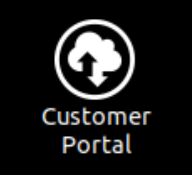
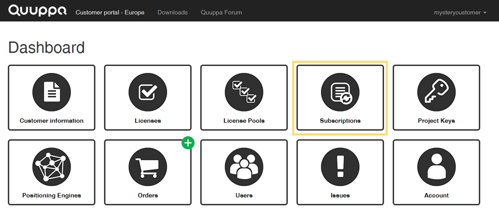
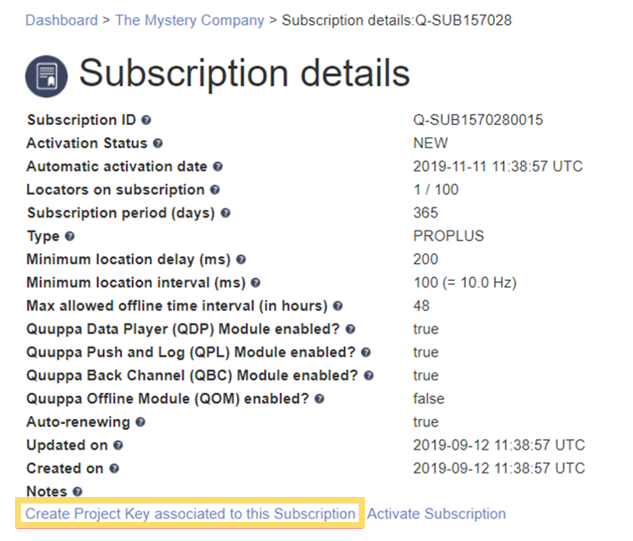
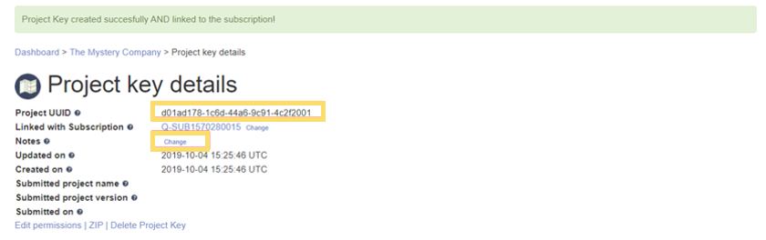
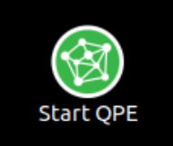
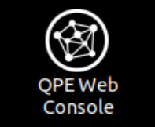

プロジェクトの提出
あと少しです！プロジェクトの使用を開始するには、プロジェクトとプロジェクトキーを関連付け、 Quuppa Customer Portal と QSP からプロジェクトを送信します。
-
Customer Portal アイコンをダブルクリックして、 Quuppa Customer Portal
にログインします。

-
新しいプロジェクトキーを作成します。
- Dashboard で、Subscriptions
をクリックすると、サブスクリプションのリストが開きます。

- このプロジェクトに適したサブスクリプションをリストから探し、ID をクリックして選択します。Subscription details ページが開きます。
- Create Project Key associated to this Subscription
ボタンをクリックして、一意の ID を持つ新しいプロジェクトキーを生成します。

- 新しいプロジェクトキーの Project Key details
ページが開きます。ここにはプロジェクトキーの詳細が表示されます。プロジェクトキーの UUID
をクリップボードにコピーします。Note:プロジェクトキーにはメモとして、プロジェクト名などを追加しておくといいでしょう。このメモがあれば、 UUID を完全に覚えていなくても、後で簡単にプロジェクトキーを見分けられるようになります。

- Dashboard で、Subscriptions
をクリックすると、サブスクリプションのリストが開きます。
-
QSP に戻り、プロジェクトと新しいプロジェクトキーを関連付けます。
- 上部のメニューバーで、Project > Associate with a key を選択します。
- Quuppa Customer Portal のユーザー名とパスワードを使ってログインします。
- 表示されたパネルから関連するプロジェクトキーを探して選択し、Associate with selected key ボタンをクリックします。
- QSP の上部にあるメニューバーで、Project > Submit project を選択し、プロジェクトを送信します。
- プロジェクトを保存します。
-
QPE Web コンソールでプロジェクトをアクティブ化します。
- Quuppa Controller のデスクトップで、 Quuppa Positioning Engine
アイコンをダブルクリックして起動し、プロンプトが表示されたらパスワードを入力します。

- デスクトップの Open the QPE Web Console アイコンをダブルクリックして開きます。

- Set New Key ボタンをクリックして、このプロジェクトとプロジェクトキーを関連付けます。
- ステップ 1.d でクリップボードにコピーしたプロジェクトキーをペーストし、submit
ボタンをクリックします。Note:操作の途中でプロジェクトキーがなくなってしまっても心配する必要はありません。 QSP または Quuppa Customer Portal で探すことができます。
- QPE により、自動的にファイルが同期されます。
- QPE が自動的に起動しない場合には、追跡モードで起動します。Note:Locator テーブルにすべてのロケーターが表示されるまでにはしばらく時間がかかることがあります。
自分のドットをマップ上で確認するには、Map View ボタンをクリックします。
お疲れ様でした！これで追跡を開始する準備ができました。 - Quuppa Controller のデスクトップで、 Quuppa Positioning Engine
アイコンをダブルクリックして起動し、プロンプトが表示されたらパスワードを入力します。